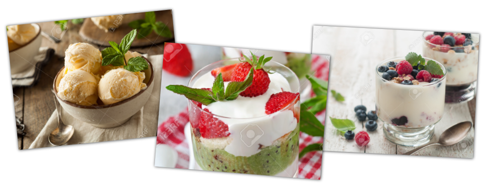

A B O U T
關於Art Dessert
 堅持用最細緻的工法，讓甜點感動您的味蕾Aat Dessert成立於1995年新成立之甜點公司，專注於甜點(蛋糕/派/鬆餅)的創意開發；及義式咖啡(含 各式飲料)之販售服務。我們提供一 個充滿想像力及令人安心的享受甜點環境。 持續為客戶提供安心又放心的產品，歷經塑化劑、毒澱粉、起雲劑事件我們一路把關，秉持著 「安心、用心、創新」的精神一路走來，在未來我們也將持續提供客戶最優質安心的產品，持續保持著這顆心來服務顧客。
在這個科技發達的現代裡，為了所有喜愛品嚐美食的顧客們著想，健康是品嚐美食的首要條件之一，所以不放香精，結合台灣特有農產品 ，讓布丁奶酪同時擁有法式甜點的優雅及道地台灣味，每一杯布丁奶酪都是師傅們用心的呵護，才能烤出香醇的布丁，層層工法，細細品 嘗，讓您每一口都吃進最真實的感動！ 另外還有松露巧克力禮盒與手工冰淇淋，多種口味法式甜點供您選擇。